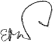

Admiration of the beauty that surrounds me gives meaning to my life and action. I have experienced this feeling since I was young and I can gladly say that over the years, it is still blooming in me. As an artist, I try to transfer onto canvas, by means of colors and textures, brush, palette knife, pen or pencil all that fascinates me. Nature is my inspiration; whether it be the changing seasons, still life or portraits.
My works are in numerous private collections in Canada, Austria, France, Germany and Poland; some of which can be vied at del-art.ca/elizabeth
Say hello at elathepainter@gmail.com 